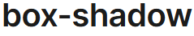

¿Qué es CSS?
CSS son las siglas de Cascading Style Sheets . Es un lenguaje de diseño gráfico que se utiliza para describir la presentación de un documento escrito en un lenguaje de marcado, como HTML o XML.
CSS son las siglas de Cascading Style Sheets . Es un lenguaje de diseño gráfico que se utiliza para describir la presentación de un documento escrito en un lenguaje de marcado, como HTML o XML.
En el panorama actual del desarrollo web, JavaScript es prácticamente indispensable para crear experiencias de usuario ricas y funcionales.
| Nombre | Descripción | Valores Posibles | Ejemplo de Uso | Imagen | Fuente |
|---|---|---|---|---|---|
| font-size | Define el tamaño de la fuente del texto de un elemento. | px (pixeles), pt (puntos), cm (centimetros), mm (milimetros), in (pulgadas). | h1 {font-size: 2.5em; } |
 |
FSE |
| border-radius | Define el radio de las esquinas de un elemento, creando bordes redondeados. | Un valor: Aplica el mismo radio a las cuatro esquinas (ej: 10px). Dos valores: El primero aplica a las esquinas superior izquierda e inferior derecha, el segundo a la superior derecha e inferior izquierda (ej: 10px 5px). Tres valores: El primero aplica a la esquina superior izquierda, el segundo a las esquinas superior derecha e inferior izquierda, y el tercero a la esquina inferior derecha1 (ej: 10px 5px 20px). |
oval {border-radius: 50%; } |
BRS | |
| display | Especifica el tipo de caja utilizada para un elemento HTML, lo que influye en su comportamiento en el flujo del documento. | block: El elemento ocupa todo el ancho disponible y comienza en una nueva línea. inline: El elemento solo ocupa el espacio necesario para su contenido y no fuerza saltos de línea. inline-block: El elemento fluye como inline pero permite establecer propiedades de block como width y height. flex: Activa el contexto de formato flexbox para el diseño unidimensional. grid: Activa el contexto de formato grid para el diseño bidimensional. none: El elemento se elimina del flujo del documento y no se muestra. |
li {display: inline;} |
DPY | |
| flexbox | Al establecer display: flex; en un contenedor, se activa el módulo de diseño Flexible Box. Esto permite una distribución y alineación eficiente de los elementos hijos (flex items) dentro del contenedor, incluso cuando su tamaño es desconocido o dinámico. | flex (para activar el flex container). Propiedades relacionadas (para el contenedor flex): flex-direction, flex-wrap, flex-flow, justify-content, align-items, align-content. Propiedades relacionadas (para los flex items): order, flex-grow, flex-shrink, flex-basis, flex, align-self. |
.nav-bar {
display: flex;
justify-content: space-between;
align-items: center;}
|
FBX | |
| position | Especifica el método de posicionamiento utilizado para un elemento, afectando cómo se coloca en el documento y cómo interactúa con otros elementos. | static: Valor por defecto. El elemento se posiciona según el flujo normal del documento. relative: El elemento se posiciona según el flujo normal, pero se puede desplazar (top, right, bottom, left) respecto a su posición original sin afectar el espacio de los demás elementos. |
.absolute {
position: absolute;
top: 50px;
right: 0;} |
 |
PSN |
| box-shadow | Añade efectos de sombra alrededor del marco de un elemento. | offset-x: Desplazamiento horizontal (positivo a la derecha, negativo a la izquierda). offset-y: Desplazamiento vertical (positivo hacia abajo, negativo hacia arriba). blur-radius (opcional): Desenfoque de la sombra. spread-radius (opcional): Extensión de la sombra. color (opcional): Color de la sombra. inset (opcional): Si se incluye, la sombra se dibuja dentro del elemento. |
.card {box-shadow: 5px 5px 10px rgba(0, 0, 0, 0.3);} |
 | BXS |
| overflow | Especifica qué sucede si el contenido de un elemento desborda su área de contenido. | visible: El contenido desbordado se muestra fuera del área del elemento (valor por defecto). hidden: El contenido desbordado se recorta y no se muestra. scroll: Se añaden barras de desplazamiento (horizontal y vertical si es necesario) para ver todo el contenido. auto: El navegador añade barras de desplazamiento solo cuando el contenido desborda. |
.scrollable {
width: 200px;
height: 150px;
overflow: scroll;
} |
OVW | |
| z-index | Especifica el orden de apilamiento de un elemento posicionado (con position diferente de static). Elementos con un valor de z-index mayor se muestran frente a elementos con un valor menor. | Cualquier valor entero (positivo, negativo o cero). Nota: z-index solo funciona en elementos con una propiedad position establecida en relative, absolute, fixed, o sticky. | .overlay {
position: absolute;
top: 0;
left: 0;
background-color: rgba(0, 0, 0, 0.5);
z-index: 10;
} |
Z-IX | |
| opacity | Define la transparencia de un elemento. Un valor de 0 hace que el elemento sea completamente transparente, mientras que 1 lo hace completamente opaco. | Aplican en orden a las esquinas superior izquierda, superior derecha, inferior derecha e inferior izquierda (ej: 10px 5px 20px 2px). | .transparent-box {
opacity: 0.7;
} |
OPY | |
| margin | Define el espacio alrededor de un elemento, fuera de cualquier borde definido. Se utiliza para controlar la separación entre elementos. | Un valor: Aplica el mismo margen a los cuatro lados (ej: 10px). Dos valores: El primero aplica a los márgenes superior e inferior, el segundo a los márgenes izquierdo y derecho (ej: 10px 20px). Tres valores: El primero aplica al margen superior, el segundo a los márgenes izquierdo y derecho, y el tercero al margen inferior (ej: 10px 20px 5px). Cuatro valores: Aplican en orden a los márgenes superior, derecho, inferior e izquierdo (ej: 10px 20px 5px 15px). |
p {
margin-bottom: 15px;
} |
MGN | |
| padding | Define el espacio entre el contenido de un elemento y su borde. Se utiliza para crear espacio interno dentro del elemento. | Un valor: Aplica el mismo relleno a los cuatro lados (ej: 10px). Dos valores: El primero aplica al relleno superior e inferior, el segundo al relleno izquierdo y derecho (ej: 10px 20px). Tres valores: El primero aplica al relleno superior, el segundo al relleno izquierdo y derecho, y el tercero al relleno inferior (ej: 10px 20px 5px). Cuatro valores: Aplican en orden al relleno superior, derecho, inferior e izquierdo (ej: 10px 20px 5px 15px). |
.button {
padding: 10px 20px;
} |
PDG | |
| background-color | Define el color de fondo de un elemento. | Los mismos valores de color que la propiedad color (nombres de colores, hexadecimales, RGB, RGBA, HSL, HSLA). También puede tomar el valor transparent. | body {
background-color: #f0f0f0;
} |
BGC | |
| text-align | Define la alineación horizontal del texto dentro de un elemento de bloque o celda de tabla. | left: Alinea el texto a la izquierda (valor por defecto para la mayoría de los elementos). right: Alinea el texto a la derecha. center: Centra el texto horizontalmente. |
p.right-aligned {
text-align: right;
} |
TXA | |
| width | Define el ancho del área de contenido de un elemento. El área de contenido es la parte interior del elemento donde se muestran su contenido, excluyendo el relleno, el borde y el margen. | Valores de longitud: px (píxeles), em, rem, vw (ancho del viewport), vh (alto del viewport), % (porcentaje del ancho del elemento padre), etc. | img {
width: 100%;
height: auto;
} |
WTH |